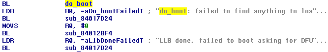
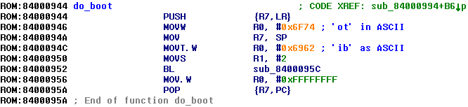
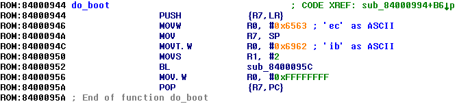
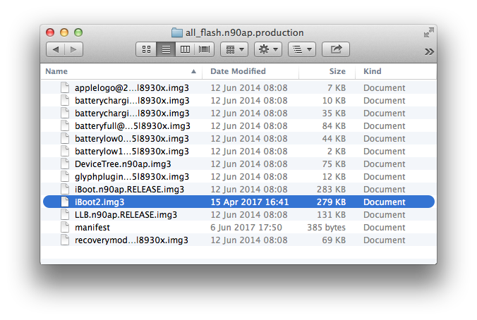
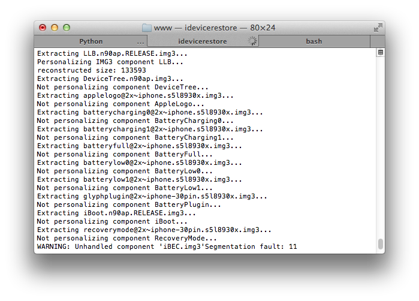
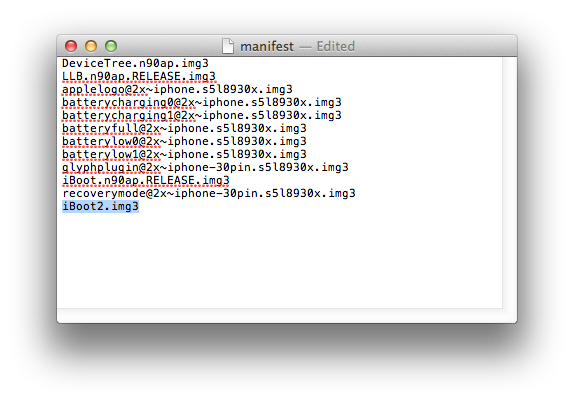
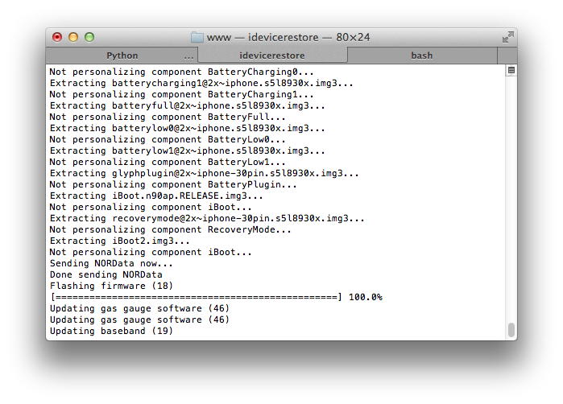
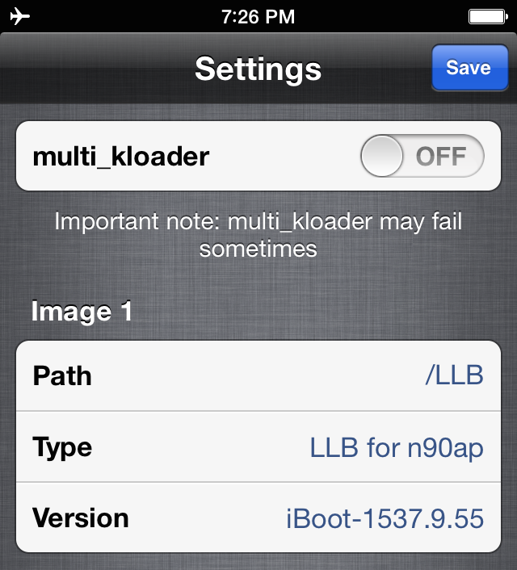

Alternative untether method
Technique we'll talk about was originally discovered by @iH8sn0w and used in his iBooty. For dualboot it was first used by @ShadowLee19Instead of kloadering both iBSS+iBEC and making them load orderly, let's follow more native way - use NOR-section of device's NAND to store secondary bootloader, just where all original IMG3s are stored
So our untether will work in following way:
- You load specially-patched LLB using kloader
- LLB looks into NOR for image with identity ibec (special patch is needed, originally it looks for ibot) and loads it. iBEC image must still be decrypted
- iBEC mounts third partition, grabs boot components and loads them all just like in case of iBSS+iBEC method
Patching LLB
After its initialization LLB looks for IMG3 with tag ibot and if such image was found, LLB will validate, decrypt and jump to it, otherwise it will switch to DFU-Mode:
Go to do_boot function, its call should be right before LDR R0, =#AddressToDoBootString (in this case it was recognized properly):

Patch these MOV R0 instructions to make this LLB load IMG3 with any identity you want (use ARM To Hex Converter to convert ARM instructions in their hexadecimal representations). For example, ibec:

Signature checks must be patched as well, obviously. It may be easily done using iBoot32Patcher
Flashing iBEC
First of all patch (and pack it into IMG3 obviously) iBEC as described in Part 5 of this guide and make sure it works properly thriceUnfortunately, you'll need to restore your device, because the best way to flash non-original IMG3s to device is packing them into IPSW and adding them to all_flash manifest
Unzip IPSW, go to all_flash directory and place your iBEC here with name beginning with iBoot or some else original component's name:
 ...because otherwise idevicerestore will fail restore:
 Now open manifest and add your iBEC's filename to the end of it:
 Pack your IPSW and restore. You'll know iBEC was flashed properly if its name appeared in idevicerestore's log:  In Way Out disable multi_kloader option and type path to your patched LLB (it must remain unpacked raw image):
